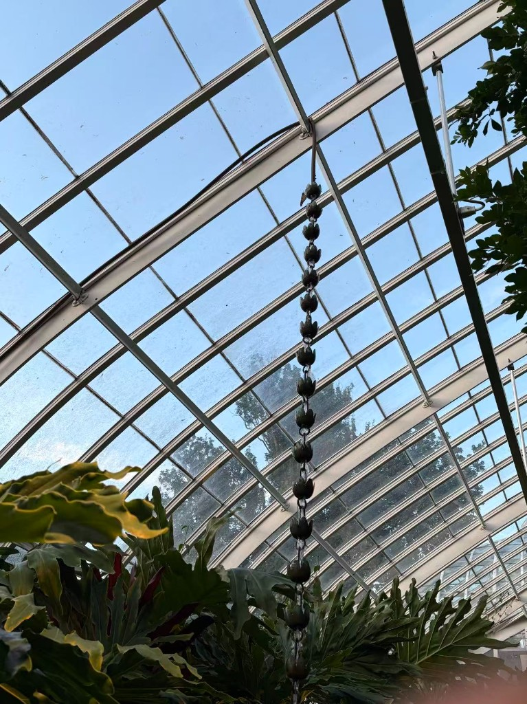

▶
the little film Pinlog cut from the trip
pinlog.
HackCMU 2026
Go somewhere.
Phipps

the glasshouse

Cathy

Warhol
Go somewhere.
Keep a little of it.
Plan a trip as pins on a map, live it by dropping photos and notes onto those pins, then relive it as an auto-generated vlog. Everything is a pin.
-
1
Plan as pins Drop stops on the map; the planner turns them into a day-by-day route.
-
2
Photos land themselves Shoot as you go — EXIF GPS puts each photo on the right pin automatically.
-
3
One tap, a little film Your pins, photos and notes become a narrated vlog. No editing.

Built at HackCMU 2026. Sign-in by Auth0 · map by MapLibre + OpenFreeMap · narration by
Claude + OpenAI · film by Remotion. Run it yourself with pnpm dev, then open
localhost:3000.